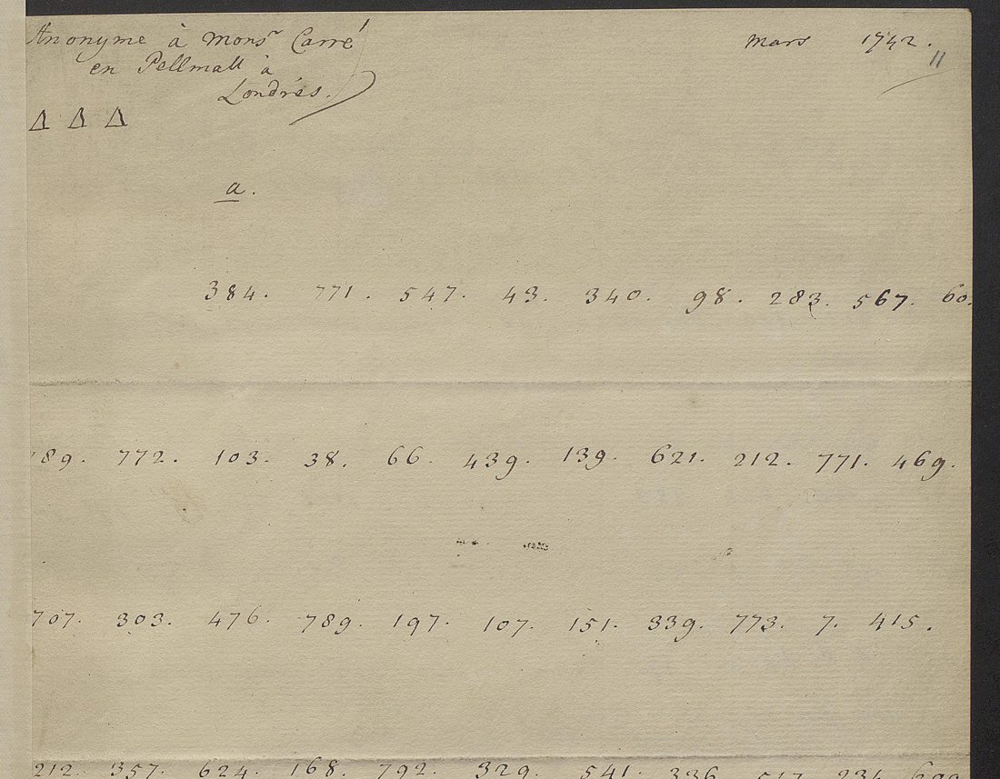

At a glanceNot solved · 0 of 1,323 code groups
- The letters
- Three anonymous letters to “Mr Carré in Pall Mall”, London: March 1742, one received on 22 August 1742, and 19 January 1745. All three are copies made by the office that intercepted them.
- Where
- British Library, Add MS 32305 ff. 11–12, 14–17 and 22–23, a codebreaker’s file catalogued as “unidentified cipher keys”; DECODE R2968, R2970 and R2972.
- The cipher
- A two-part code of three-figure groups, about 800 entries: 1,323 groups, 381 distinct, values 1–800.
- How it was tried
- All three letters were transcribed and checked against the decipherer’s own frequency count. A letter-by-letter solution scores no better than the same groups shuffled, and the values do not follow alphabetical order.
- Still open
- All of it. There is no gloss, no clear text and no crib, and no key was found.
01 The letters
BL Add MS 32305 is an English codebreaker’s working file of intercepted letters of 1719–59, most of them deciphered between the lines at the time. Three are addressed to “Mr Carré in Pall Mall”, entirely in 3-figure groups, with no clear text and no gloss. Until 14 October 2026 they shared an entry with the Paris letters of February 1719 in the same volume, which are in a different code: Paris 1719 code letters (a different cipher, with its own page).

All three are fair copies made by the intercepting office, lettered by sheet with catchwords. R2968 (ff. 11–12) is headed “Anonyme à Monsr Carré en Pellmall à Londres”, March 1742. R2970 (ff. 14–17) is a “Copie d’une Lettre en Chiffre, sans date”, addressed with the writer’s mark ΔΔΔ to Mr Carré “en Palmal” under cover to a Mr Chevening(?), jeweller near Charing Cross, signed “Anonyme” and endorsed “R Aug. 22 1742”: it was received on 22 August 1742, five months after R2968. R2972 (ff. 22–23) is dated London, 19 January 1745.
| Record | Groups | Distinct | Highest |
|---|---|---|---|
| R2968 | 372 | 208 | 796 |
| R2970 | 470 | 219 | 800 |
| R2972 | 481 | 196 | 796 |
| All three | 1,323 | 381 | 800 |
02 The transcription
Checked against the decipherer’s tally. R2969 (f. 13, “Carré 1742”) counts the groups of the two 1742 letters together, R2968 and R2970, including a line the copyist of R2968 wrote twice and bracketed. With that line included, the transcription here gives exactly R2969’s figure for 686 (20), 212 (19), 106 (18), 121 and 12 (14), 707 (12), 781 (11), 539 and 621 (10), and fifteen more values down to 7; it differs by one for 573, 27 and 772. So the text is sound to about one group in 300. R2969’s de for 686 and 106 and la for 121 are tentative guesses marked with dots.
Statistics. 147 of the 381 values occur once. Every hundred from 1 to 800 has 36–62 distinct values in use, so the whole range is live. The profile is flat: the commonest value, 212, is 2.3% of the text, then 12, 106 and 686 at 1.8–2.0%. Repeats are short: 94 repeated bigrams, 24 trigrams, 8 four-grams and one five-gram (151 521 330 621 212, in both 1742 letters). A run 95 57 606 451, three times in 1745 and underlined by a later hand, is probably a name spelled out. The 1745 letter uses the same code: 73% of its tokens are values seen in 1742. The intercepting clerk underlined single groups, probably proper names; 135, 204, 785 and 80 are underlined in both 1742 letters.
03 What the system is
Not a letter cipher. An assignment of one letter to each group was annealed against a French 4-gram model. It reaches −2.09 and −2.11 per character on the real text, and −2.12 and −2.17 on the same groups in shuffled order: no difference, and the output is not French. With 381 types for 1,323 tokens a homophonic letter cipher would be overfitted in any case; the type–token ratio and the frequency profile are those of a word code.
Not a one-part code. In a one-part French code the mass of le, la, les, que, qui, et, en would pile up in their alphabetical bands. The observed token mass per band of 50 values, set against what an alphabetical list of the 700 commonest French words predicts, correlates at r = −0.26. Placing the 30 commonest values at their proportional alphabetical positions does no better than chance: 86% of 2,000 random placements do as well. The contemporary guess of de for both 686 and 106, two values far apart, points the same way. This is a two-part code of about 800 entries, the same type as the Paris 1719 code in the same volume, whose glosses show the two-part order.
The language is assumed to be French from the headings; nothing in the figures confirms it. 1,323 tokens of a random-order code of about 800 entries allow a handful of guesses for the commonest words and no way to check them, and no crib is known. The decipherer of 1742 stopped at the frequency count, and the small marks under groups on R2972 are his cross-references to the sheet where a run recurs, not a reading.
04 What remains
- All three letters (1,323 groups): not read. Blocker: no key material. No gloss, crib or key exists for this code.
- What would open it: the key, another letter in the code with an interlinear decipherment, or a clear copy or summary of any of the three. Places to look: the Newcastle papers for August 1742 and January 1745 (Add MS 32699–32700), the SP 107 intercepts and SP 36 for 1742 at Kew, and the Secret Office decipherers’ letter-books. The identity of Carré and of the jeweller “Chevening” would suggest names for the underlined groups.
- Searched without result: the rest of the volume (R2971, a different 4-figure code headed “Carré 1742” by an archivist, and R2975–R2981, letter ciphers of 1749–59), and the web.
05 Sources
- DECODE records R2968, R2969, R2970, R2972 (images by login; not in the public domain).
- British Library, Add MS 32305, “unidentified cipher keys”, 39 folios.
Transcriptions of the three letters and the test scripts (carre/), notes and profile: targets/carre1742/.